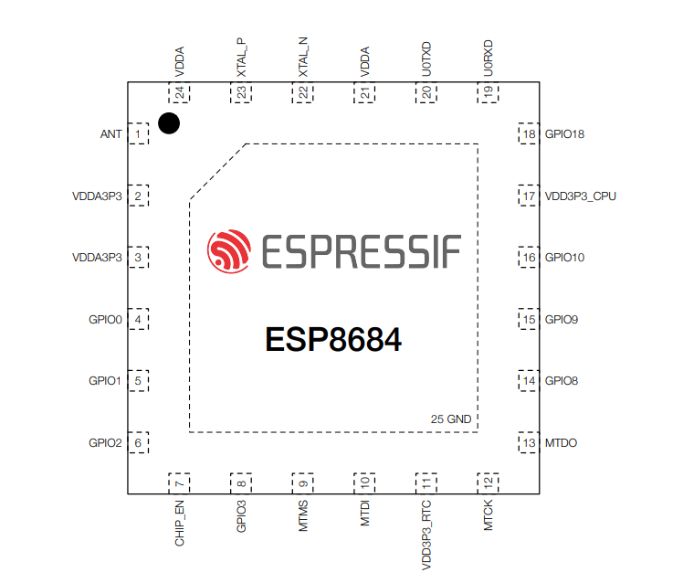
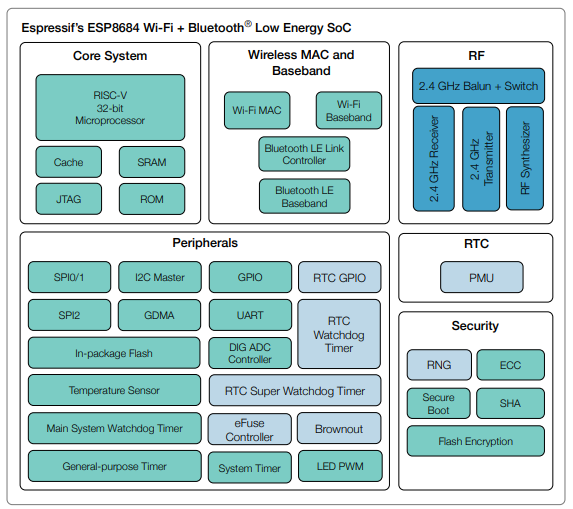

ESP32
The ESP32-C series represents a significant evolution in low-power IoT microcontrollers. Unlike its predecessors,
this series is built on the RISC-V open-standard architecture, providing a perfect balance between performance, power efficiency, and cost.
---
---
schematics TOP

Here you will find the technical specifications for the ESP32-C